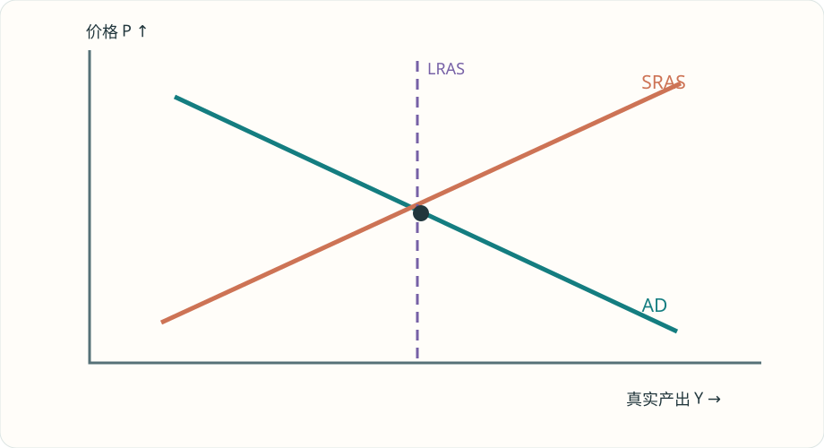
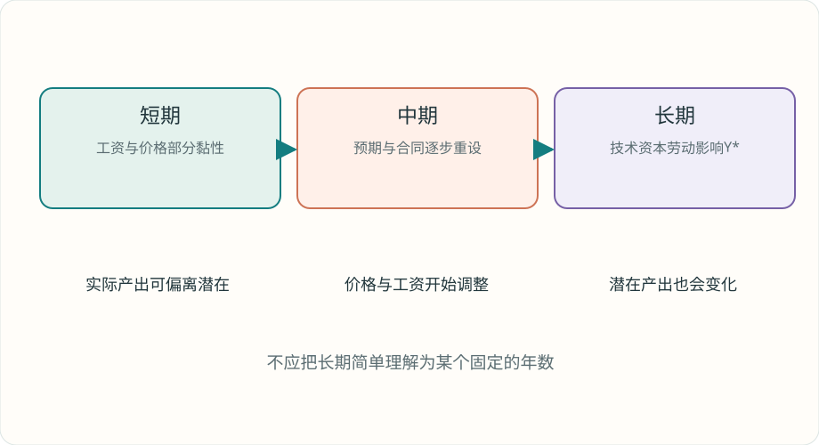
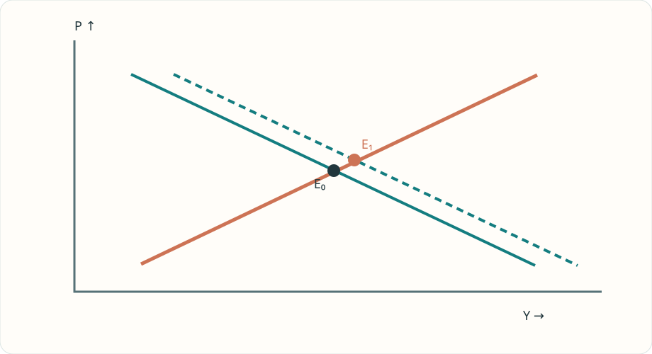
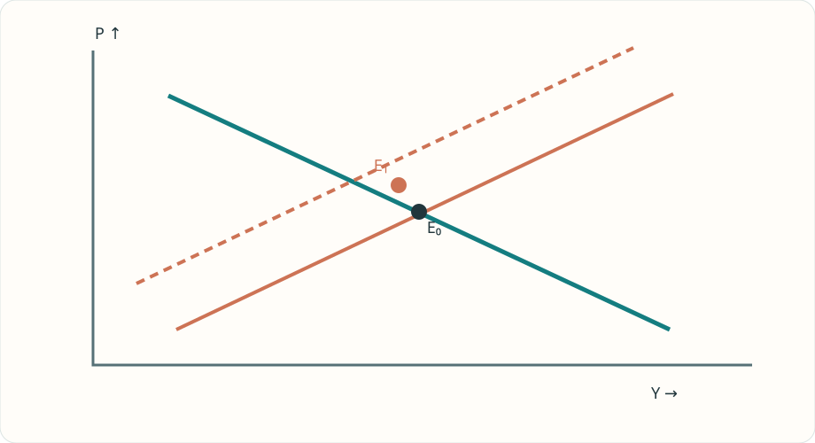

AD–AS：需求冲击与供给冲击为何会产生不同结果
能源更贵与消费者突然增加支出，都可能抬高物价，但产出方向可能相反。让 AD、短期 SRAS 与长期潜在产出共同回答问题。
为什么不能只用 GDP 支出恒等式解释通胀？
GDP 支出法将名义产出分解为消费、投资、政府购买和净出口，但它本身并没有告诉我们价格水平与实际产出如何共同决定。AD–AS 分别描述在不同价格水平下的计划总需求与企业愿意提供的实际产量，交点提供一个宏观均衡。AD 的向下倾斜可能来自真实购买力、利率与国际贸易等机制，但强度依制度与模型设定，不是会计恒等式直接推出的性质。

短期 SRAS 为什么可以向上倾斜？
在名义工资或标价调整并不即时完成时，某些企业面对较高需求与价格会暂时扩大生产；另一些企业面临成本增加而减少供给。基于价格黏性或不完全信息的模型往往得到短期向上倾斜的总供给曲线。长期 LRAS 在许多教材模型中画在潜在产出的位置，强调名义需求扩张不能永久提高由生产率、资本、劳动等决定的实际生产能力。
潜在产出是不可直接观察、需要估计的分析量，并不是固定常数；人口、资本投资、劳动参与率和技术变动会使 LRAS 本身移动。

一个同时可解出 Y 与 P 的线性模型
以下选择完全构造的参数，便于检验图中的每个箭头：潜在产出 Y*=100，基期价格水平 P₀=100。总需求线设为 P=100+D−0.7(Y−100)，短期总供给线设为 P=100+S+0.5(Y−100)，其中 D 是自主需求冲击、S 是不利成本/供给冲击。D=S=0 时交点恰好是 (Y,P)=(100,100)。
同时移动需求与供给：物价和产出如何变化？
需求冲击 D>0 和不利供给冲击 S>0 会移动不同曲线。输入均是构造指数单位。
正需求冲击：短期产出与价格往往同升
若 D=+10、S=0，则产出缺口=10/1.2≈8.33，Y≈108.33；价格 P=100+0.5×8.33≈104.17。扩张性需求使 AD 右移，在固定短期 SRAS 下，产出和价格水平均上升。但这并不保证居民福利提高：资源接近瓶颈时，实际产出响应可能更小而价格响应更大。

负供给冲击：价格高了，产出却可能降低
若 D=0、S=+10，产出缺口=−10/1.2≈−8.33，Y≈91.67；价格 P=100+10+0.5×(−8.33)≈105.83。能源、供应链或生产率不利变化会把 SRAS 向上/向左推，从而使价格上涨与实际产出下降同时出现，这是理解滞胀风险的一种最小机制。

| 现象 | 正需求冲击（其他固定） | 不利供给冲击（其他固定） |
|---|---|---|
| 短期实际产出 Y | 上升 | 下降 |
| 综合价格水平 P | 上升 | 上升 |
| 通胀政策取舍 | 抑制需求可能降低价格压力 | 仅压低需求可能进一步压低产出 |
| 真实世界提醒 | 央行与家庭预期会反应 | 冲击可能持续影响潜在供给 |
长期调整和政策为什么没有万能按钮
当经济高于潜在产出，工资和价格可能在后续逐渐调整，使 SRAS 发生移动，产出向潜在水平靠拢。实际速度依合同、预期、劳动力结构与央行可信度而变化，不是「明年必定回到自然产出」。不利供给冲击有时还会降低潜在产出，因此不能假定 LRAS 永远固定在同一条线上。
来源与进一步阅读
以下机构或原始研究帮助核对概念与经验边界。本文数值图示和实验是专为教学设计的构造例子，不是历史实测数据。
- OpenStax — AD–AS 的构建与均衡 · chapter 11.2
- OpenStax — 短期冲击与长期潜在产出 · chapter 11 summary
- OpenStax — 长期潜在产出与 LRAS · section 13.1